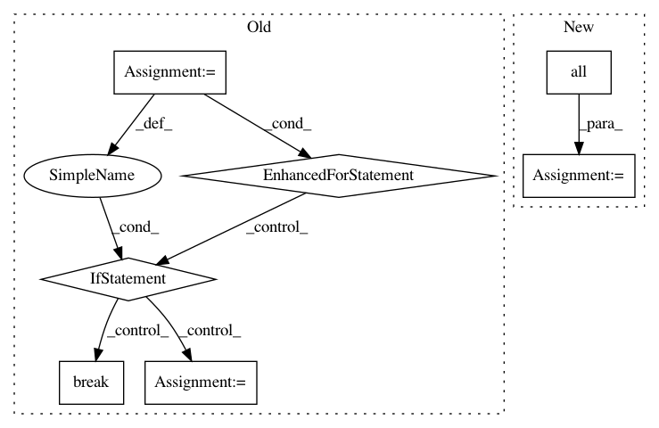

9a2903dac097a7f3633f6c828533ed385c7159c9,qucumber/utils/data.py,,extract_refbasis_samples,#Any#Any#,64
Before Change
:rtype: torch.Tensor
tmp = []
num_visible = train_samples.shape[-1]
for i in range(train_samples.shape[0]):
flag = 0
for j in range(num_visible):
if train_bases[i][j] != "Z":
flag = 1
break
if flag == 0:
tmp.append(train_samples[i])
z_samples = torch.zeros(len(tmp), num_visible, dtype=torch.double)
for i in range(len(tmp)):
After Change
:rtype: torch.Tensor
idx = (
torch.tensor(train_bases == "Z", dtype=torch.uint8)
.all(dim=1)
.to(train_samples.device)
)
z_samples = train_samples[idx]
return z_samples
In pattern: SUPERPATTERN
Frequency: 3
Non-data size: 7
Instances
Project Name: PIQuIL/QuCumber
Commit Name: 9a2903dac097a7f3633f6c828533ed385c7159c9
Time: 2019-07-17
Author: emerali@users.noreply.github.com
File Name: qucumber/utils/data.py
Class Name:
Method Name: extract_refbasis_samples
Project Name: geomstats/geomstats
Commit Name: f2923023825046cfc16e05190796914215b9ee12
Time: 2018-09-18
Author: alice.le-brigant@enac.fr
File Name: tests/test_hypersphere.py
Class Name: TestHypersphereMethods
Method Name: test_closest_neighbor
Project Name: geekcomputers/Python
Commit Name: dcf4f1e5310c5e4096e601763e2554c0ed918386
Time: 2018-11-14
Author: winter_klaus@web.de
File Name: primelib/primelib.py
Class Name:
Method Name: isPrime